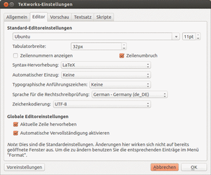
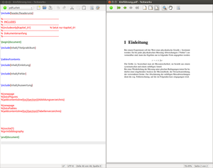
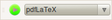
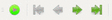
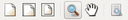

TeXworks
Dieser Artikel wurde für die folgenden Ubuntu-Versionen getestet:
Ubuntu 16.04 Xenial Xerus
Zum Verständnis dieses Artikels sind folgende Seiten hilfreich:
TeXworks  ist ein plattformübergreifender Editor zur Erstellung und Bearbeitung von Tex-Dokumenten des mächtigen Textsatzprogramms LaTeX. Die übersichtliche Oberfläche ermöglicht einen einfachen Einstieg auch für nicht technische Anwender. TeXworks erzeugt in der Standardeinstellung PDF-Dokumente und verwendet dazu die pdfTeX- und XeTeX-Erweiterungen, mit der aus TeX-, LaTeX- und ConTeXt-Quellen unmittelbar PDF-Dateien erzeugt werden können.
ist ein plattformübergreifender Editor zur Erstellung und Bearbeitung von Tex-Dokumenten des mächtigen Textsatzprogramms LaTeX. Die übersichtliche Oberfläche ermöglicht einen einfachen Einstieg auch für nicht technische Anwender. TeXworks erzeugt in der Standardeinstellung PDF-Dokumente und verwendet dazu die pdfTeX- und XeTeX-Erweiterungen, mit der aus TeX-, LaTeX- und ConTeXt-Quellen unmittelbar PDF-Dateien erzeugt werden können.
Installation¶
TeXworks kann direkt aus den offiziellen Paketquellen installiert [1] werden:
texworks (universe)
 mit apturl
mit apturl
Paketliste zum Kopieren:
sudo apt-get install texworks
sudo aptitude install texworks
Das Programm kann dann über die Dash gesucht und gestartet werden [2].
Hinweis:
Um LaTeX in vollem Umfang nutzen zu können, ist es sinnvoll und teilweise erforderlich, zusätzliche Pakete wie im LaTeX-Artikel beschrieben zu installieren.

Allgemeine Einstellungen¶
Die TeXworks-Einstellungen sind unter "Texworks -> Bearbeiten -> Einstellungen..." einstellbar. Unter dem Reiter "Editor" werden beispielsweise "Syntaxhervorhebung", "Zeilennummerierung" und die "automatische Vervollständigung" aktiviert. Hier wird auch die Sprache für die "Rechtschreibprüfung" ausgewählt. Die "Zeichenkodierung" kann mittels eines Auswahlmenüs umgestellt werden. Unter Ubuntu ist die Codierung UTF-8. Im Reiter "Textsatz" können die Verarbeitungsprogramme eingestellt werden. Näheres hierzu ist im Artikel LaTeX zu finden.
Rechtschreibprüfung einrichten¶
TeXworks ist in der Lage, mit Hilfe eines installierten Wörterbuchs den verfassten Quelltext auf Rechtschreibung zu überprüfen. Wörterbücher werden über die Pakete
myspell-de-de oder
hunspell-de-de
installiert.
Unter Ubuntu nutzt TeXworks die Wörterbücher in den Verzeichnissen /usr/share/myspell/dicts - Standardpfad zum Myspell-Wörterbuch. TeXworks ist darüber hinaus auch in der Lage, Wörterbücher zu verwenden, welche im Ressourcen-Verzeichnis von TeXworks hinterlegt sind. Dieses Verzeichnis kann über "Texworks -> Hilfe -> Einstellungen und Resourcen..." erreicht werden.
|  |
| Editor (links) und Vorschaufenster (rechts) |
Bedienung¶
Die Oberfläche von TeXworks ist in zwei Bereiche aufgeteilt: Im linken Bereich findet man den Editor mit dem LaTeX-Quellcode, auf der rechten Seite wird das Vorschaufenster mit dem gesetzten Dokument angezeigt. Beide Bereiche besitzen jeweils eine Titelleiste, eine Menüleiste und eine Werkzeugleiste. Im unteren Bereich des Editors sind die Konsolenleiste, das Ausgabefenster und die Statusleiste zu sehen.
Werkzeugleiste des Editors¶
Im linken Teil der Werkzeugleiste  ist ein Symbol zum Setzen des Dokuments vorhanden, sowie ein Auswahlmenü für das Verarbeitungsprogramm. Das Tastaturkürzel zum Setzen des Dokuments ist Strg + T . Die rechte Seite der Werkzeugleiste zeigt die Standardfunktionen: "Neu", "Öffne", "Speichern" | "Rückgängig", "Wiederholen" | "Ausschneiden", "Kopieren", "Einfügen" | "Suche", "Ersetzen".
Werkzeugleiste des Vorschaufensters¶
Im Vorschaufenster wird in der linken Werkzeugleiste  das Symbol zum Setzen des Dokuments sowie die Symbole für "Erste Seite", "Vorhergehende Seite", "Nächste Seite", "Letzte Seite dargestellt". Der rechten Abschnitt  zeigt die Funktionen: "Originalgröße", "An Fensterbreite anpassen", "An Fenstergröße anpassen" | "Vergrößern", "Blättern" | "Suche".
Fehleranalyse¶
Oft stößt man beim Erstellen eines Dokumentes auf Fehler, die sich während des Schreibens eingeschlichen haben. Beispielsweise hat man vergessen, Klammern zu setzen oder gibt mathematische Befehle ein, ohne die dafür vorgesehene Umgebung zu nutzen. Wenn man das Dokument setzt, in dem ein Fehler enthalten ist, wird LaTeX die Weiterverarbeitung stoppen und auf einen Fehler hinweisen. Man erkennt dies daran, dass im Ausgabefenster des Editors eine Fehlermeldung erscheint und LaTeX auf eine Anweisung wartet. Hierbei ergeben sich prinzipiell vier mögliche Eingaben in die Konsolenleiste:
| Fehleranalyse | |
| Tastenkombination | Funktion |
| ⏎ | Der Fehler wird ignoriert und das Setzen des Dokuments wird fortgesetzt. Manchmal kann so ein Dokument zu Ende gesetzt werden, der Fehler bleibt aber im Dokument bestehen. |
| H ⏎ | Es wird eine Hilfe angeboten. Oft kann die Hilfe einen Hinweis auf den Fehler geben. |
| I ⏎ | Man schlägt einen neuen Text vor. Der Text kann sofort eingegeben und mit ⏎ bestätigt werden. Der neue Text ersetzt den Fehlertext für dieses eine Mal. Um die Fehlerquelle endgültig zu beseitigen, muss der Fehler im Editor ausgebessert werden. |
| X ⏎ | Das Setzen des Dokuments wird abgebrochen. |
Wird das Setzen des Dokuments abgebrochen, so ist im Ausgabefenster die letzte Aktion, die LaTeX durchgeführt hat, noch zu sehen. Bei der Fehleranalyse sollte bedacht werden, dass die angegebene Fehlerposition nicht mit der tatsächlichen Fehlerpostion übereinstimmen sein muss. Ein Beispiel:
Öffnet man eine neue Umgebung \begin{quote}, ohne diese anschließend wieder zu schließen, so erkennt LaTeX den Fehler erst, wenn eine weitere Umgebung geschlossen wird, was unter Umständen an einer weit fortgeschrittenen Stelle des Dokuments sein kann.
Manchmal erscheint beim darauf folgendem Setzen des Text ein Fehler, welcher bereits verbessert wurde. Dies hängt mit den Hilfsdateien zusammen, welche LaTeX während des Setzens erstellt. Veraltete Hilfsdateien können über "Texworks -> Datei -> Hilfsdateien entfernen..." gelöscht werden.
Für weitere Hilfe beim Auffinden und Lösen von Fehlern besitzt TeXworks ein eingebautes Skript, welches alle Fehler und Warnmeldungen extrahiert und in tabellarischer Form darstellt. Die Meldungen sind wie folgt kodiert:
Rot stellt Fehler dar
Gelb zeigt Warnungen an
Blau steht für zu volle oder nicht vollständig gefüllte Boxen
Eine Erläuterung zu den in LaTeX verwendeten Boxen ist unter anderem in den LaTeX-Tipps  von T. Richter zu finden. In der zweiten Spalte wird das Dokument angegeben, in welcher der Fehler zu finden ist. Die dritte Spalte zeigt die Stelle (Zeilennummer), an der der Fehler aufgetreten ist. In der letzten Spalte wird der Fehler spezifiziert. Über den Dokumentennamen kann man direkt zum Fehler in das jeweilige Dokument springen.
von T. Richter zu finden. In der zweiten Spalte wird das Dokument angegeben, in welcher der Fehler zu finden ist. Die dritte Spalte zeigt die Stelle (Zeilennummer), an der der Fehler aufgetreten ist. In der letzten Spalte wird der Fehler spezifiziert. Über den Dokumentennamen kann man direkt zum Fehler in das jeweilige Dokument springen.
Autovervollständigen¶
Mit Hilfe der Autovervollständigungs-Funktion ist es möglich, LaTeX-Codes einzugeben, ohne diesen vollständig ausschreiben zu müssen. Die Autovervollständigung erlaubt über Schlüsselworte und Tab ⇆ das Einsetzen des LaTeX-Codes. Dabei wird der Cursor an die Stelle gesetzt, an der anschließend weitere Informationen eingegeben werden müssen. Die Schlüsselwörter sind nach festen Mustern aufgebaut.
| Kurzbeschreibung zur Autovervollständigung | ||
| Beschreibung | Schlüsselwort | LaTeX-Code |
| Mathematische Variable alpha in einer Mathematikumgebung | xa | \alpha |
| Mathematische Variable alpha im Text | dxa | $\alpha$ |
| Großgeschriebene mathematische Variable Omega | xco | \Omega |
| Umgebungen | b | Durchscrollen von verschiedenen Umgebungen mit wiederholtem Tab ⇆ |
| Figure Umgebung | bfig | \begin{figure} |
| Umgebung zur Erstellung einer Liste | bite | \begin{itemize} |
| Optionen in der Umgebungen zur Erstellung einer Liste | biteo | \begin[]{itemize} |
| Umgebung für eine neue Section | sec | \section{} |
| Umgebung für eine neue Subsection | ssec | \subsection{} |
| Umgebung für eine neue Section ohne Übernahme ins Inhaltsverzeichnis | secs | \subsection*{} |
| Umgebung für eine neue Section mit Optionen | seco | \subsection[]{} |
Über "Texworks -> Hilfe -> Einstellungen und Ressourcen..." kann das Ressourcenverzeichnis erreicht werden. In diesem befindet sich der Ordner completion mit den Dateien, welche die Schlüsselwörter zur Autovervollständigung enthalten.
Möchte man ein eigenes Schlüsselwort definieren, so kann man eine .txt-Datei im Ordner completion erstellen, in welcher diese Schlüsselworte definiert werden. Die Einträge sollten folgendes Format besitzen:
1 2 | bfigo:=\begin{figure}[#INS#]#RET##RET#\end{figure}•
\bibliography{#INS#}•
|
Im oberen Fall wird dem Schlüsselwort bfigo die Umgebung figure mit optionalen Argumenten zugewiesen. An der Stelle von #INS# wird der Cursor platziert und #RET# stellt einen Zeilenumbruch da. Der Punkt • (in der Zeilenmitte) am Ende der Zeile stellt einen Platzhalter dar, welcher für die Autovervollständigung erforderlich ist.
Im zweiten Fall wird keine Abkürzung angegeben. TeXworks wird dann bei Erkennung des Wortes (meist nach den ersten paar Buchstaben) den vollständigen Code mit den dazugehörigen geschweiften Klammern einsetzen. Der Cursor wird dann zwischen den geschweiften Klammern stehen.
 Übersichtsartikel
Übersichtsartikel- Erstellt mit Inyoka
-
 2004 – 2017 ubuntuusers.de • Einige Rechte vorbehalten
2004 – 2017 ubuntuusers.de • Einige Rechte vorbehalten
Lizenz • Kontakt • Datenschutz • Impressum • Serverstatus -
Serverhousing gespendet von